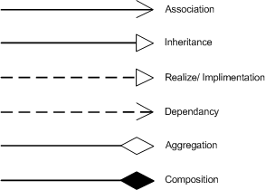

Foreword
These are notes for certain chapters in Dr. Dianxiang Xu's book Modern Software Engineering: Principles & Practices.
I'm writing this a few days before the final exam as one part of my prep strategy. Since I'm only re-reading relevant chapters, there will be pretty heavy omissions and missing sections. It'd be nice to pad this out as a resource for future students, but I'll have to return the book less than a week from the time of writing. If you happen to come across this and want to contribute your own notes, feel free to fork the repo or open a PR!
-Reece
Technical Details
These notes use the stellar static site generator mdBook.
TODO
-
Basic Design Principles
-
Concepts
- Modularity
- Cohesion
- Coupling
- Encapsulation
- Information hiding
-
Precondition & Postcondition
- Options for Precondition Design: Validated and Assumed Precondition
- Design By Contract: Pre/Postcondition as a Contract
- Assumed Precondition (Non-Redundancy) Principle
- Pre/Postcondition Violation Rules
- Reasonable Precondition Principle
- Precondition Availability Rule
- Understanding Pre/Postcondition Assertions
-
Concepts
-
Change of Contract (Pre/Postcondition)
- Rule of Contract Change, Stronger/weaker conditions
-
Object-oriented design
- Class Diagrams
- ADTs vs classes
-
Inheritance
- Overriding, Polymorphism/Dynamic Binding
- Module View vs Type View
- Method Overriding: Pre/Postconditions
- Design By Contract vs Subcontracting < blocked on Design by Contract
- Method Overriding: Co-variance and contra-variance
-
Design Heuristics
- Cohesive Abstraction
- Encapsulation and Information Hiding
- Accessors and Mutators
- Classes as Data Types
- Inheritance
- Abstract properties
-
Agile Design Principles
- Single Responsibility Principle
- Open-Closed Principle
-
Refactoring
- What Is Refactoring?
- Why Refactoring
- Code smells
- Refactoring methods
- Refactoring vs design principles
-
Quality Assurance
- What Is Quality Assurance
- Static Code Analysis
-
Testing:
- What is software testing
- Agile Testing Quadrants
- Black-Box, White-Box, Gray-Box
- Testing Stages in Waterfall
-
Code Coverage
- Statement Coverage
- Decision coverage
- Branch coverage
- Decision vs condition
- Condition coverage
- Condition/decision coverage
- Modified condition/decision coverage
- Multi-condition coverage
- Subsumption Relationship
- Coverage tool: EclEmma
Chapter 1 - Introduction
Note: Chapter 1 will not be on the final exam.
Chapter 2 - Software Development Process
Note: Chapter 2 will not be on the final exam.
Chapter 3 - Scrum for Software Development
Note: Chapter 3 will not be on the final exam.
Chapter 4 - Fundamentals of Software Design
- Software Design: the creative process of transforming a problem described by the requirements specification into a software solution
- High-Level Design
- software architecture
- overall structure
- relations among components
- properties of components/relations
- Low-Level Design
- logical, detailed design of individual components
- High-Level Design
- Software design is a heuristic, sloppy process
Basic Design Principles
Precondition and Postcondition
Design By Contract
Change of Contract
Chapter 5 - Object-Oriented Design
Object-oriented software construction is to build a set of interacting ADTs partially or fully implemented.
Inheritance and polymorphism are also essential features.
Class Diagrams (p. 114)
Static structure of an object-oriented program containing
- attributes
- constructors
- methods
- relationships among classes and objects
May be
- created as a design or analysis doc before coding
- generated from existing source code
Relationships Between Classes
Two groups:
- class-level relationships
- inheritance
- implementation
- instance-level relationships
- dependencies
- association
- aggregation
- composition
Class-Level Relationship
Inheritance is also called generalization because the subclass/type is a specialized form of the superclass/type. The implementation relationship between a class and an interface means the class implements the interface.
Instance-Level Relationship

- Dependency
- points from the client element to the server element
- changes to the server may cause changes to the client
- Association
- family of links
- bi-directional (line)
- uni-directional (directed line)
- aggregation (includes composition aggregation)
- reflexive (on the same class)
- Can include:
- role names
- ownership indicators
- multiplicity
- visibility
- etc.
- family of links
- Aggregation
- specific binary association representing a part-whole or part-of relationship
- contained class does not have a strong lifecycle dependency on container
- a teacher has students
- destroying a teacher doesn't mean destroying students
- Composition
- aka composition aggregation
- stronger form of aggregation
- considered as a "physical containment" relationship
- when container is destroyed, contents are destroyed
Multiplicity Notations
| Notation | Meaning |
|---|---|
| 0 | No instances |
| 0..1 | No instance or 1 instance |
| 1 or 1..1 | Exactly 1 instance |
| 0..* or * | Zero or more instances |
| 1..* | 1 or more instances |
ADTs as the Class Foundation (p. 117)
The notion of a class supports the basic design principles:
- Modularity
- Cohesion
- Encapsulation
- Information Hiding
Abstract Data Types (ADTs) help us:
- capture the essential meaning of a class
- develop a deep understanding of acceptable class abstractions
- why it is desirable to document a public interface in terms of:
- preconditions
- postconditions
- invariants.
Abstract Data Type
A data type for which only the properties of the data and the operations to be performed on the data are specified, without concern for how the data will be represented or how the operations will be implemented.
Usually, an object's prodperties can be captured by its behaviors (operations) rather than its data.
Example: Stack (p. 119)
- ADT in code
- why it's inadequate - what's the essential property?
- Formal ADT specification solves inadequacy
- Type name and parameters
- Function signatures
- Preconditions
- Axioms
Class Invariant
A condition that any object of the class must satisfy at certain times.
Example: In the TicTacToe example, turn must be either X or O, though its data type is char.
Class invariants are usually established during construction and constantly maintained between calls to public methods. The code within the body of a method may break an invariant as long as it is restored before the method returns.
A class invariant may capture relationships between the methods of the class. For example, peek(push(s, x)) = x and pop(push(x, s)) = s describe the functional relationships between push, pop, and peek.
Summary
- A non-abstract class is an ADT equipped with implementation details
- the class's public interface corresponds to the ADT specification
- instance variables are the data representation of the ADT
- the methods:
- implement the ADT's functions
- satisfy the preconditions and axioms
- Object-oriented software construction
- Build a collection of interacting real-world entities (ADTs)
- Create classes that are easier to implement initially and modify over time
- At the level of analysis, design, or implementation
- The choice of data representation may introduce additional constraints
- if an array is used to represent a stack, whether the stack is full becomes an issue
- An abstract class is an ADT with partial or no implementation details
- An interface is an ADT without any implementation
- An object-oriented design consists of a set of interacting ADTs, partially or fully implemented
- Without ADTs, classes are like convenient carrying cases for loosely-related collections of data and operations
Inheritance and Polymorphism (p. 121)
A subclass: - inherits all the features from its superclass - can modify certain inherited features - achieved through method overriding
Polymorphism
The quality or state of existing in or assuming different forms. For this chapter: an object or reference may take multiple forms in different instances.
Dynamic Binding:
The process of linking a procedure call to a specific sequence of code (typically a class method) at runtime.
- Figure 5.4 in book has a visual representation!
Meanings of Inheritance: Module vs. Type View
Module View
A subclass describes an extension of its superclass from the perspective of reusing the superclass's code.
- Problems can arise when a designer
- uses the module view without a meaningful is-a relationship
- does not observe the polymorphism and dynamic binding semantics
Example: Stack<E> as a subclass of Vector<E> (p. 123)
Stack<E>inherits methods fromVector<E>that violate the Stack's LIFO principleadd(0, element)adds to bottom of stack- `remove(0) removes bottom of stack
- A better design would replace inheritance with composition (p. 123)
Type View
A subclass describes a subtype of the superclass type.
- For example,
intmight be a subtype oflongordouble. - The set of objects of a superclass subsumes the set of objects of a subclass.
- More aligned with the semantics of polymorphism than module view
- Generally preferred to module view
- Consistent with ADTs as the class foundation
- A subclass's ADT is a subtype of its superclass's ADT
Example: Square vs. Rectangle (p. 123, 125)
Square as a subclass of Rectangle
- in math, a square is a special type of rectangle
- if
Squareinherits fromRectangle, it must overrideRectangle'ssetWidth()andsetHeight()methods. - since the classes behave so differently, the is-a relationship isn't ideal.
- there should be no inheritance relation
Subtype
Data type \(t_2\) is a subtype of data type \(t_1\) if every value of \(t_2\) can be assigned to a variable of \(t_1\).
Consider inheritance's relationship with the Open-Closed Principle:
- a subclass may revise an inherited method through overriding while adding new methods.
- open for extension through inheritance
- closed for modification through overriding
Pre/Postcondition of Method Overriding
Subcontracting Rule of Inheritance
An overriding method that has either
- an equal or weaker precondition
- an equal or strong postcondition
causes no harm to a client call that relies on the original.
Covariance/Contravariance for Method Overriding
class AnimalShelter {
Animal getAnimalForAdoption();
void putAnimal(Animal animal);
}
class CatShelter extends AnimalShelter {
Cat getAnimalForAdoption();
void putAnimal(Object animal);
}
getAnimalForAdoption()follows a covariant subtyping relationshipCat extends AnimalCatShelter extends AnimalShelter- considered overriding
putAnimal()follows a contravariant subtyping relationshipAnimal extends ObjectCatShelter.putAnimal()takes a more general argument than the class it extends from- considered overloading
Design Heuristics (p. 135)
Design heuristics are general guidelines, not recipes! They only help look for good characteristics or bad signs of a class design.
Cohesive Abstraction
A class should be a cohesive module to which the methods belong together.
- Generally associated with a single abstraction (like an ADT).
- should be capturable by a noun or adjective
StackorComparable- verbs like
printorsendshould raise a red flag
- should be capturable by a noun or adjective
- Should also think if any items are missing
- High cohesion is associated with loose coupling.
Encapsulation and Information Hiding
A cohesive interface doesn't guarantee a good design.
Data structure should be bundled with associated operations
TicTacToemight contain many appropriate methods, but what if theboardis defined in another class?
Accessors and Mutators
Accessor
A query method that finds out the runtime state of an object of the class.
Mutator
A function that changes the state of an object.
Command-Query Separation Principle
When a class has both accessors and mutators, a clear separation is desirable.
- accessors should not change object states
- mutators should make a certain change
Classes as Data Types
In a typed object-oriented language, a class is a data type.
When a class only has static variables/methods, it deserves a closer look.
- this is acceptable if a class is meant to only have one instance (Singleton)
Inheritance
- in a good inheritance relationship, the superclass's methods should be cohesive with those in the subclass.
Stack<E>andVector<E>do not have cohesive methods.
- will a future change of the superclass affect a subclass?
- avoid introducing new assumptions that could be broken by a potential superclass change
- overriding may modify the precondition and postcondition of an overridden method and affect current/future clients of the class
Abstract Properties
Can often be stated in terms of:
- preconditions
- postconditions
- class invariants
If not, the class's intent may be unclear.
Class invariants capture how the constructors and methods (especially mutators and accessors) are related.
- An accessor's postcondition should reflect no object state change
- A mutator's postcondition should specify a specific object state change
The SOLID Principles (p. 141)
SOLID is a mnemonic acronym for five agile design principles that are intended to make software design more understandable and adaptable to requirements change. The SOLID principles are a subset of many principles promoted by Uncle Bob.
Note: only the SRP and OCP were covered in class.
Single Responsibility Principle
Single Responsibility Principle
A class should have one and only one reason to be changed.
- who is the code responsible to?
- who must the design of the code respond to?
This does not apply to bug fixes and refactoring - those are the responsibility of the programmer, not the code.
The SRP is closely related to cohesion and coupling.
- Cohesion is the degree to which the elements contained in a module belong together, mostly from the functional perspective.
- The elements in a cohesive module should change for the same reason.
- with 2+ responsibilities in one module, changes to one may impair or inhibit the others
- well-aligned with separation of concerns (4.1.6)
public class RetirementAccount() {
public void compileReport();
public void printReport();
}
This class could be changed for
- the content of the report
- the format of the report (HTML, XML, etc)
These are separate responsibilities, so should be in separate classes.
Open-Closed Principle
Open-Closed Principle
Software modules should be open for extension, but closed for modification.
A subclass may
- extend a superclass through inheritance (open for extension)
- override an inherited method without the need to change or recompile the superclass (closed for modification)
Polymorphic Open-Closed Principle
Extension should not result in changes to the source or binary code of the existing superclass or clients of the superclass.
Example: Closed Shape vs. Open Shape (p. 143):
General idea:
- several classes (
Line,Circle, etc.) extendShape. - Some shapes have a
calculateArea()method, others don't. - class
Diagramhas anArrayList<Shape>with the following loop:
for (Shape shape : shapes) {
if (shape instanceOf Circle)
totalArea += (Circle) shape.calculateArea();
else if (shape instanceOf Square)
totalArea += (Square) shape.calculateArea();
}
What if we need to add a new shape?
- doesn't affect
Shape - does affect
Diagram, a client ofShape- this violates the OCP
Problem: inadequate classification of Shape objects
- some have area, others don't
Possible solutions:
- Create separate
ClosedShapeabstract class withcalculateArea()method - Give
LinecalculateArea() method, return 0
When creating a class design that complies with the OCP, it's vital to anticipate likely changes. It allows us to invent an abstraction to protect the change from affecting the existing classes.
Chapter 6 - Design Patterns and Anti-Patterns
Note: this chapter was not covered in class and will not be on the final.
Chapter 7 - Refactoring for Design Improvement
Code Smells
Named Refactorings
Refactorings for Modularity
Refactoring for High Cohesion
Refactoring for Loose Coupling
Refactoring for Encapsulation/Information Hiding
Refactoring for Inheritance/Polymorphism
Refactoring to Design Patterns
Putting It All Together
Defensive Design for Security
Note: this chapter was not covered in class and will not be on the final.
Chapter 9 - Software Quality Assurance
Software Quality Assurance
A set of activities that monitor and assess the software development methods and processes in a project to ensure proper quality of the software.
Software quality assurance involves both product and process assurance.
All software development projects should have a quality assurance plan that defines the activities and tasks to ensure that the software satisfies the established requirements and customer needs within the budget and schedule constraints.
Verification and Validation (p. 272)
Validation
Aims to ensure that the software meets the needs of customers and other stakeholders.
Are we building the right thing?
- Sample validation methods:
- requirements reviews
- prototyping
- validation of analysis models
- acceptance testing
Verification
Aims to ensure that the software complies with the existing requirements, specifications, or regulations.
Are we building it correctly?
-
Sample verification methods:
- reviews
- walkthroughs
- inspections
- testing
- static code analysis
- theorem proving
- model checking
-
Validation often involves acceptance and suitability with external customers while verification is an internal process.
-
Software testing may address both verification and validation issues
- validation
- checks the observed results of test cases against the customer's needs
- acceptance testing
- checks the observed results of test cases against the customer's needs
- verification
- checks the observed results against
- a specification (postcondition of a method)
- the desirable and undesirable behavior from implicit requirements or expectations
- checks the observed results against
- validation
Software Testing
Software Testing
Testing is the process of executing a program with the intent of finding errors.
Assume that the program contains errors and then test the program to find as many errors as possible.
What makes a good test case?
- A good test is one that has a high probability of detecting an as-yet undiscovered error.
- A successful test is one that detects an error.
Testing vs. Development Processes
Testing Stages in Waterfall
In non-agile processes, testing of given production code is to execute the code with test cases to validate the requirements and find errors. This is usually led by a quality assurance group.
- Executes given production code with test cases to validate requirements and find errors
- Often performed by an independent testing team
Sample Process:
- specify test requirements
- create a test plan to meet constraints
- computing resources, time, budget
- design test cases to cover requirements
- implement tests
- manually perform or write/run test code
- analyze test results and create reports
The testing process in Waterfall is often destructive because it attempts to break the software.
- not in Agile/TDD: see below!
Agile Processes
In Agile processes, testing is as integral to software development as coding.
Following agile principles, agile testing
- ensures delivering the business value desired by the customer at frequent intervals
- involves all members of a cross-functional team
In TDD, test cases are transformed into test code before the production code is written.
Compared to traditional testing, this process is constructive in that it builds up software.
Test Cases
A test case is composed of
- a context
- the condition or configuration under which the test can be executed
- one or more test inputs
- action or procedure with input data, such as a method call or a UI interaction
- corresponding test oracles
- a test oracle consists of
- expected result (oracle value) of input
- comparison of the expected result with the actual result
- a test oracle consists of
Positive, Negative, and Malicious Tests
- Positive Test
- deals with only valid inputs
- Negative Test
- deals with only invalid inputs
- Malicious Test
- special type of negative test that attempts to break the software
- e.g. SQL injection tests
To adequately test a program, negative tests usually outnumber positive tests. A ratio of 3:1 is not uncommon.
Test Suites
A test suite is a set of test cases and/or test suites.
It's generally impossible to create a complete test suite that can exhaustively test a real-world program due to its large input space and possible execution paths. The design of a test suite often aims to select representative tests with a certain strategy.
Pass and Fail
A failing test indicates that either:
- the software under test is faulty
- the test case itself is faulty
A passing test doesn't guarantee correct software!
The Test Oracle Problem
The test oracle needs to address several questions:
- What is the source for the expected result?
- is the source trusted and correct?
- a correct specification isn't always available
- Is it possible to define the expected result precisely?
- is there a precision requirement?
- there are different kinds of input with different possible precision
- What is the format and media of the expected result?
- is it displayed? printed? streamed into a file? database? network?
- What should remain unchanged by the test input?
- Is it feasible to directly or indirectly compare the actual result with the expected result?
Specified Test Oracles
Created from a trusted (partial) specification or abstract model.
- trusted specification: precondition/postcondition
- abstract model: finite state machine
Sometimes implemented as built-in assertions in the source code. A failure occurs when an assertion evaluates to false.
Implicit Test Oracles
Distinguishes between a system's correct and incorrect behavior through general implicit knowledge rather than domain knowledge or specification.
Implicit test oracles target faults by demonstrating runtime anomalies such as exceptions, abnormal termination, and crashes. This applies to almost all programs.
Derived Test Oracles
Distinguishes correct behavior based on information derived from properties of the software under test, other increments, or implementations of it.
Regression testing can exploit relations that should hold across multiple versions of the software.
Testing Strategies
Black-Box Testing
- tests with no knowledge of internal workings
- typically tests features according to specification
- sample techniques (detail on p. 276):
- equivalence partitioning
- boundary value analysis
- testing with pre/postconditions
- model-based testing
White-Box Testing
- uses knowledge about the code
- sample techniques (detail on p. 277):
- code coverage-based testing
- path testing
- mutation testing
- dynamic symbolic execution
Black-Box vs. White-Box Testing
Fuzzing
- black-box when generating test inputs from specification
- white-box when generating test inputs from source code
Neither strategy is superior, each has advantages and disadvantages.
Gray-Box Testing
- Example 1
- design tests according to the code of multiple modules (white box)
- conduct tests through the exposed interfaces (black box)
- Example 2
- create and run tests according to pre/postcondition of a module (black box)
- measure the code coverage (white box)
- if code coverage doesn't meet goal, we can generate more tests from the code to exercise the uncovered statements or paths (white box)
Testing Levels
Note: Not on the "Final Exam Topics" sheet.
Testing Types
Note: Not on the "Final Exam Topics" sheet.
The Agile Testing Quadrants
Introduced by B. Marick, popularized by L. Crispin and J. Gregory.

The diagram is slightly different from the book's (p. 282). The book notes that some diagrams may be different because of various context/interpretation discrepancies, or because some terms just have no well-accepted definitions.
A particular testing form may belong to more than one quadrant. For example, regression testing might fit into all quadrants.
Static Code Analysis
Static Code Analysis
The analysis of source or binary code without actually executing the code. Analogous to automated code review.
Where compilers find syntax errors, SCA tools find software defects. They do not execute given code.
An SCA tool may build upon compiler or reverse engineering techniques for lexical and syntax analysis. It examines the parsed code from the perspectives of control flows or data flows and identifies potential problems according to specific features about what is good or bad.
Control Flow Analysis
Uses control flow graphs or call graphs to reason about the order of statements or instructions and the possible execution paths.
Data flow analysis
Examines how the variables (data) are computed and used across the basic code blocks, usually based on the CFGs.
In recent years, machine learning algorithms have been applied to SCA.
Here, the book covers the tools FindBugs and PMD. These are not listed on the final review sheet but appear on page 284-288 and in the Chapter 9 PowerPoint. There probably also won't be any questions about SCA via machine learning, but that info is on pages 289-290.
Theorem Proving
Note: Not on the "Final Exam Topics" sheet.
Model Checking
Note: Not on the "Final Exam Topics" sheet.
Fundamental Testing Techniques
Fault Detection Condition
Code Coverage
Mutation Testing
Equivalence Partitioning
Boundary Value Analysis
Testing with Pre/Postconditions
Test Automation
Note: this chapter was not covered in class and will not be on the final.
Quiz Questions
Quiz 3
- Which condition is weaker than \(x > 0\)?
- \(x \cdot x > 0\)
- Because \(x > 0 \implies x \cdot x > 0\)
- Which statement is correct?
- \(length = count\) is neither stronger nor weaker than \(length = (count-1)\)
- Which of the following is the most reasonable precondition of the method
deposit (double amount)in the BankAccount class?- \(\text{amount} > 0\)
- In the following code, Module B results in a call of
sqrt(5). Which statement is correct?
// Module A
// Precondition: $x >= 0$
// Postcondition: return x's square root
double sqrt(double x) {
...
}
// Module B
double x = -5;
double y = sqrt(x);
assert abs(y * y-x) < eps
- There is a bug in Module B
Quiz 4
Quiz 5
- Which is relevant to the concept of inheritance in object-oriented programming?
- Dynamic binding, method overriding, polymorphism
Relevant Midterm Questions
- Good software design aims at:
- High cohesion and loose coupling
- “Making instance variables private, rather than public” follows the principle of:
- Information hiding
- The Law of Demeter ("only talk to friends") can:
- reduce coupling